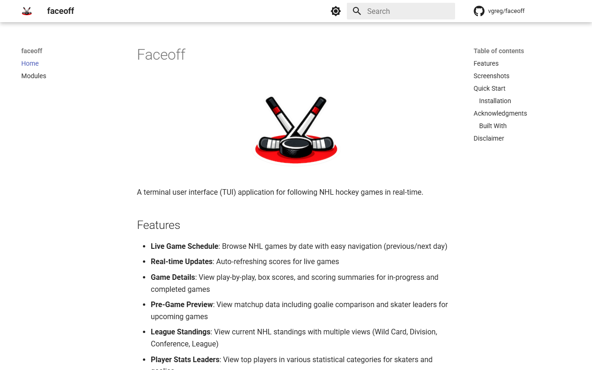
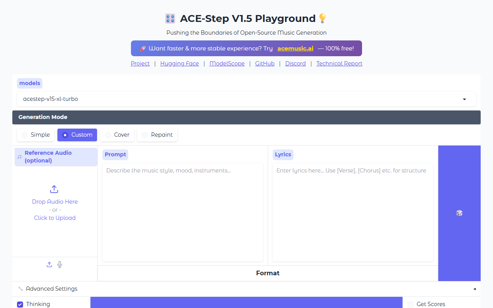

游戏Games
Fly / Fly
首页原文："by @levelsio + Cursor + ThreeJS"；免费可玩，无需账号。Project page: "by @levelsio + Cursor + ThreeJS"; free to play, no account.
打开原作品Open the work →别人做的公开作品，逐条核验Other people’s public work, checked entry by entry
收录 21 条有可核验 AI 参与痕迹的公开作品与模型演示。只给事实字段与维度对照，不排名、不打分；截图与嵌入逐条登记许可依据。21 public works and model demos with verifiable AI involvement. Fact fields and dimension comparisons only — no ranking, no scores; screenshots and embeds carry a per-entry licence basis.
首页原文："by @levelsio + Cursor + ThreeJS"；免费可玩，无需账号。Project page: "by @levelsio + Cursor + ThreeJS"; free to play, no account.
打开原作品Open the work →首页原文："vibe coded by @pseudokid, Cursor AI, Anthropic's Claude 3.7 Sonnet"；填昵称即可开始。Project page: "vibe coded by @pseudokid, Cursor AI, Anthropic's Claude 3.7 Sonnet"; enter a nickname to play.
打开原作品Open the work →README："Claude Sonnet 4 - My LLM of choice for this project..."；约 95% 代码由 AI；最近提交 2025-07（约 16 个月未更新，线上仍可玩）。README: "Claude Sonnet 4 - My LLM of choice for this project..."; ~95% of code by AI; last commit 2025-07 (~16 months, still playable).
打开原作品Open the work →Show HN："zero-code approach... built the whole thing using OpenAI Codex CLI"；素材非 AI（ansimuz / Pascal Belisle 署名）。Show HN: "zero-code approach... built the whole thing using OpenAI Codex CLI"; art is not AI (ansimuz / Pascal Belisle).
打开原作品Open the work →页面原文："The initial code base was written by Codex using gpt-5-3-codex..."；仓库 pushed 2026-10-28。 2026-11-07 复核：旧表曾标 MIT，但当日找不到 LICENSE 原文与仓库链接，降级为 link-only，撤下截图与嵌入。Project page: "The initial code base was written by Codex using gpt-5-3-codex..."; repo pushed 2026-10-28. Re-checked 2026-11-07: the old table said MIT, but no LICENSE text or repo link could be located that day; downgraded to link-only and the screenshot/embed were removed.
打开原作品Open the work →Show HN："I used Claude Code to "vibe-code" this project..."；源仓无 LICENSE。Show HN: "I used Claude Code to "vibe-code" this project..."; source repo has no LICENSE.
打开原作品Open the work →作者博客："I switched back and forth a lot between Claude Code, Gemini CLI, and Cursor..."；瓦片由 nano banana 生成。Author blog: "I switched back and forth a lot between Claude Code, Gemini CLI, and Cursor..."; tiles generated with nano banana.
打开原作品Open the work →Show HN："I built it in about a day using Cursor."；免费 10 图。Show HN: "I built it in about a day using Cursor."; free for 10 charts.
打开原作品Open the work →Show HN："this was ~70% vibe coded using Cursor / Claude Code"；仪表盘免费。Show HN: "this was ~70% vibe coded using Cursor / Claude Code"; the dashboard is free.
打开原作品Open the work →Show HN："Built with Cursor and Next.js"；数据源 levels.fyi / Numbeo，未给数据许可（风险项）。Show HN: "Built with Cursor and Next.js"; data sources levels.fyi / Numbeo, no data licence stated (risk note).
打开原作品Open the work →页面原文："A 3D Rendering Engine Built with Claude Code in Pure ES6+, Just Math and a Canvas"；无授权条款。Project page: "A 3D Rendering Engine Built with Claude Code in Pure ES6+, Just Math and a Canvas"; no licence page.
打开原作品Open the work →Show HN："Built with Cursor + Claude Code, & AntiGravity"；无需注册可浏览。Show HN: "Built with Cursor + Claude Code, & AntiGravity"; browsable without an account.
打开原作品Open the work →README："developed using AI-assisted coding (Claude Code)..."；无 LICENSE（授权列记 link-only，LICENSE: TBD），最近提交 2025-11（约 12 个月）。README: "developed using AI-assisted coding (Claude Code)..."; no LICENSE (licence column: link-only, LICENSE: TBD), last commit 2025-11 (~12 months).
打开原作品Open the work →README："Developed with AI coding agents (Claude, Claude Code)."；pushed 2026-11-02。README: "Developed with AI coding agents (Claude, Claude Code)."; pushed 2026-11-02.
打开原作品Open the work →作者博客："Context was almost 100% built by Claude Code"；2 万行中手写不足 1000 行。Author blog: "Context was almost 100% built by Claude Code"; fewer than 1,000 of 20,000 lines written by hand.
打开原作品Open the work →构建者 Tomas Henkenhaf 在 Lovable 官方博客访谈（2025-01-22）中点名用 Lovable.dev 创建 DummyForms，并称获 Lovable 黑客松第三名（目录仅称 won hackathon，名次以访谈为准）。原址公开 200、无付费墙；表单服务为账号制，含 Free 档与 Craft $12/月付费档，数据去向未核。站点 meta 作者署名 Vyomesh Tala，与访谈构建者不一致，归属细节未核。许可不明，仅外链、不镜像。Builder Tomas Henkenhaf names Lovable.dev as the tool used to create DummyForms in a Lovable blog interview (2025-01-22), where he says it won third place in a Lovable hackathon (the directory only said 'won'; the interview gives the placing). Origin checked 2026-11-07: HTTP 200, no paywall; the form service is account-based with a free tier and a US$12/month Craft plan, data handling unverified. The site's meta author credits Vyomesh Tala, differing from the interview's builder; ownership details unverified. Licence unclear; link-only, no mirroring.
打开原作品Open the work →
NHL 冰球实时比分终端应用，基于 Textual 框架与公开 NHL API 数据，声明非 NHL 官方。初始提交（Add NHL game tracker TUI application）及多条代码/文档提交带 Claude Opus 4.5/4.7 共同署名 trailer。原址 2026-11-07 实测 HTTP 200、无登录付费墙。本站只链接，未实测运行。Terminal UI for live NHL hockey scores, built on Textual and public NHL API data; the README states it is not affiliated with the NHL. The initial commit (Add NHL game tracker TUI application) and multiple code/docs commits carry Co-authored-by trailers for Claude Opus 4.5/4.7. Origin checked 2026-11-07: HTTP 200, no login or paywall. Link-only here; not run by this site.
打开原作品Open the work →
ACE-Step 官方 Space（卡片标题 ACE-Step v1.5），卡片正文明确点名 Space Demo 链接，models 字段含 v1.5 与 XL-turbo 权重。发布日取官方 release v0.1.6（ACE-Step 1.5 XL 发布，published 2026-04-03）。核验方式：huggingface.co 主站本地不可达，demo 经官方 hf.space 直连验证 200 且无需登录，卡片原文经 hf-mirror.com 镜像读取官方 raw 文件（证据 URL 为官方原址）。MIT 仅指 Space 卡片标注；本站未做运行验证。Official ACE-Step Space (card title 'ACE-Step v1.5'); the card body explicitly links 'Space Demo' and its models field lists v1.5 and XL-turbo weights. Release date taken from official release v0.1.6 (ACE-Step 1.5 XL, published 2026-04-03). Verification: huggingface.co unreachable locally; demo returned 200 via the official hf.space domain with auth_required false; card read from the official raw file via hf-mirror.com (evidence URLs remain official). MIT refers to the Space card label only. Not run by this site.
打开原作品Open the work →zai-org（原 THUDM）官方 Space，卡片正文明确说明集成 CogVideoX-5B 做浏览器内视频推理，models 字段指向 THUDM/CogVideoX-5b。发布日取官方 GitHub release v1.0（CogVideoX-1.0，published 2024-11-08，正文点名 CogVideoX-5B）。核验方式：huggingface.co 主站本地不可达，demo 经官方 hf.space 直连验证 200 且无需登录，卡片原文经 hf-mirror.com 镜像读取官方 raw 文件（证据 URL 为官方原址）。Space 卡片未标许可，模型为自定义 CogVideoX LICENSE，不声称开源；本站未做运行验证。Official zai-org (formerly THUDM) Space; the card states it integrates CogVideoX-5B for in-browser video inference, with models pointing to THUDM/CogVideoX-5b. Release date taken from official GitHub release v1.0 (CogVideoX-1.0, published 2024-11-08, body names CogVideoX-5B). Verification: huggingface.co unreachable locally; demo returned 200 via the official hf.space domain with auth_required false; card read from the official raw file via hf-mirror.com (evidence URLs remain official). The Space card carries no license and the model uses a custom CogVideoX LICENSE; no open-source claim. Not run by this site.
打开原作品Open the work →IndexTeam 官方 Space，演示 IndexTTS-2.5 零样本语音合成。发布日取官方 GitHub release v2.5.0 的 published 日期（2026-08-13，GitHub API 原文）。核验方式：huggingface.co 主站在本地网络不可达，demo 经官方 hf.space 直连域名验证 200 且无需登录，Space 卡片原文经 hf-mirror.com 镜像读取官方 raw 文件（证据 URL 仍为官方原址）。Space 卡片许可为 other，不声称开源；本站未做运行验证。Official IndexTeam Space demonstrating IndexTTS-2.5 zero-shot TTS. Release date taken from the published date of official GitHub release v2.5.0 (2026-08-13). Verification: huggingface.co is unreachable from the local network; the demo returned 200 via the official hf.space direct domain with auth_required false, and the Space card was read from the official raw file via the hf-mirror.com mirror (evidence URLs remain the official pages). Space card license is 'other'; no open-source claim. Not run by this site.
打开原作品Open the work →官方 GitHub release v1.2.0 正文明确点名 gradio demo（huggingface.co/spaces/hpcai-tech/open-sora），属一手发布证据。发布日取该 release 的 published 日期（2024-06-18）。核验方式：huggingface.co 主站本地不可达，demo 经官方 hf.space 直连验证 200、config 确认 space_id 为 hpcai-tech/open-sora 且 auth_required: false；Space 卡片原文经镜像读取失败（返回鉴权错误），故许可记 link-only，不声称开源。仓库代码 LICENSE 经 raw 原文核验为 Apache-2.0，仅作补充事实。本站未做运行验证。The official GitHub release v1.2.0 body explicitly names the gradio demo (huggingface.co/spaces/hpcai-tech/open-sora) — first-party release evidence. Release date is the release's published date (2024-06-18). Verification: huggingface.co unreachable locally; the demo returned 200 via the official hf.space domain, config confirms space_id hpcai-tech/open-sora and auth_required false. The Space card could not be read via mirror (auth error), so license is recorded as link-only with no open-source claim. The repo code LICENSE was verified as Apache-2.0 from the raw file, noted only as a supplementary fact. Not run by this site.
打开原作品Open the work →看维度对照（不排名）See the dimension comparison (no ranking) · 看模型发布轨See the model-release track